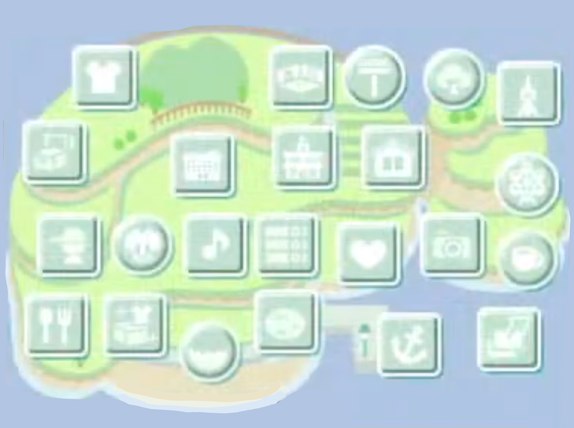
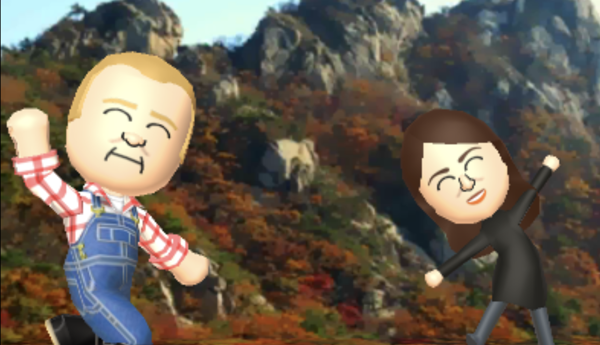

Sexbomb Island Informational Website Sexbomb Island Informational Website
Sexbomb Island Informational Website Sexbomb Island Informational WebsiteWelcome to the Sexbomb Island Informational Website!

Friend Life is a series made by BVNT which includes people he likes; particularly famous people; and mostly politicians. Friend Life consists of 2 Islands, Sexbomb Island (性教育岛) and Cunned Island (婊子岛).
These are a list of Notable Miis in Sexbomb Island.
Want to check out every single Mii? Click here.
Images are important for memoirs or anything related. Take this example with doug ford and danielle smith at what seems to be part of the Rocky Mountains

Check the full gallery: here.

Tomodachi Life (2013) is a game made by Nintendo. It's a game that's released for the Nintendo 3DS; and is a sequel to the Japanese-Exclusive Tomodachi Collection.